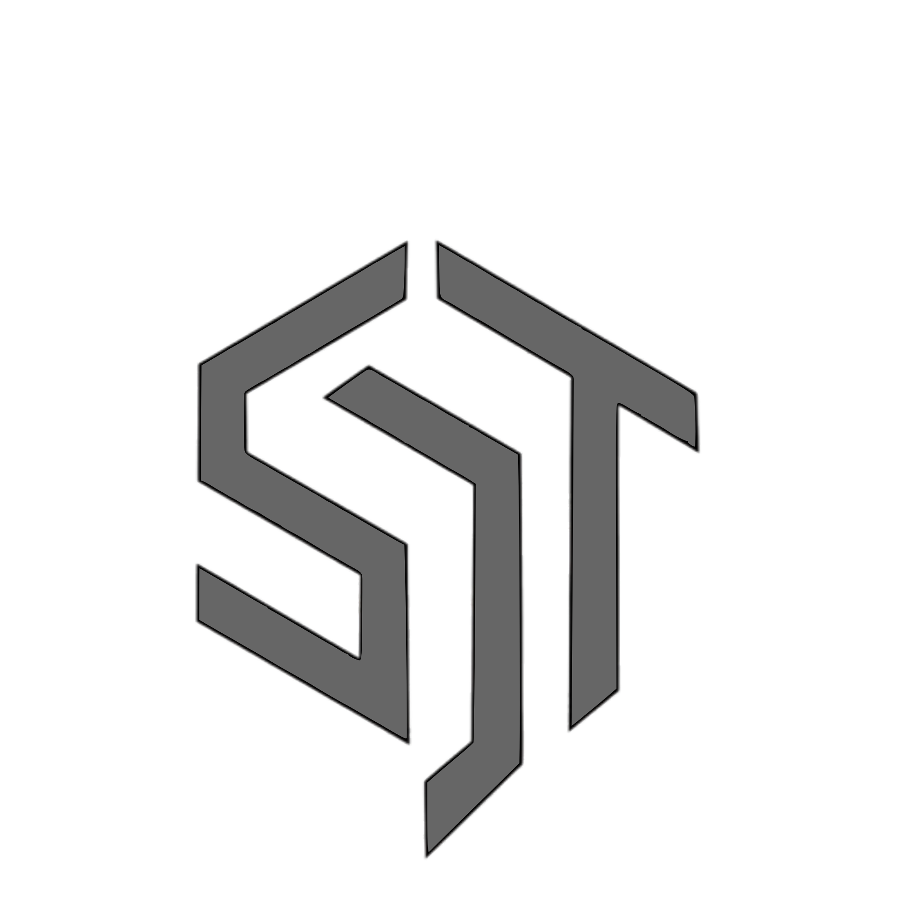

The Work.
Eight divisions. Not a slide deck — the actual reasoning behind each one: why it exists, what it's building, and how. Want to know what's live right now instead? Check On Air →
swipe the presets above · swipe WHY / WHAT / HOW within each division
The reason SDT exists in the first place.
SDT started as a channel talking about other people's games. Gaming was always going to be the first thing it built for itself — everything else grew out from here.
Games are the clearest way to actually live inside an idea instead of just describing it. SDG exists because talking about worlds stopped being enough — the studio wanted to build ones players could stand inside.
Three titles in motion, all connected by Volta Chronicles, each built for a completely different kind of player:
- THROWN — free-to-play competitive Rock Paper Scissors, built to fund everything else · active
- For the Volta — 2D co-op action/stealth, 4 players, one-hit-lethal · active
- Golden Star — open-world superhero origin story, solo dev, PS2/PS3-soul · early dev
Cross-platform builds — PC, console, mobile, and future SDPD devices. THROWN is browser-first and self-funding by design, so the bigger, slower titles never have to compromise for revenue.
Where this goes
- Cross-platform multiplayer across every current and future title
- Original franchises entirely outside Volta Chronicles
- Publishing support for outside indie developers
- Cloud gaming integration
- Exclusive experiences built specifically for SDT's own future hardware
THROWN ships first and funds the rest — that ordering is deliberate, not accidental.
Tools built to actually get used.
SDS exists because most software gets designed for a demo, not for daily use. Everything here is built around one test: would we actually keep using this ourselves?
Generic Linux distros feel like generic Linux distros — even the gaming-focused ones. SDS exists to give SDT (and eventually its own hardware) an operating system with an actual identity, not a reskinned desktop.
SDT Game OS — an Arch Linux-based system that boots straight into a Godot-powered console dashboard, with a full customizable desktop one toggle away.
PipeWire for low-latency audio, Proton + community runners for compatibility, and an A/B immutable partition layout so a bad update can never brick the system — it just falls back automatically.
Built on Arch, tuned for gaming
- Godot-powered console dashboard — under 10 seconds boot on an SSD
- One toggle away from a full customizable desktop
- PipeWire audio — low-latency, automatic Bluetooth handling
- Proton + community runners built in
- A/B immutable partitions — a bad update falls back safely, never bricks
- Flatpak support for regular desktop apps too
Long-term goal: the OS that eventually runs on SDT's own hardware.
Everything that has to talk to everything else.
Every game, every device, every assistant eventually needs to send data somewhere. SDN is the plumbing — plus outside client work that keeps the lights on.
Cloud infrastructure and networking aren't glamorous, but nothing else works without them — and SDN also takes on outside client work, which funds internal R&D without SDT needing outside investors.
VibeMesh — offline mesh messaging and file transfer — plus full client website builds, including company sites and quote-cart systems for Shiraa Global.
VibeMesh routes over Bluetooth LE, Wi-Fi Direct, and Wi-Fi Aware simultaneously — a custom SDN-style control layer decides the path data takes with zero cell towers or routers involved.
Phones talking directly to phones
- Routes over Bluetooth LE, Wi-Fi Direct, and Wi-Fi Aware — no towers, no router, no internet
- Android and iOS mesh directly with each other
- Chunked transfer pulled from multiple nearby devices at once — no real file-size ceiling
- Walk out of range and it pauses; cross paths again and it resumes automatically
- Emergency messages jump every queue instantly
Built for the places where the network just isn't there.
Ambition, made physical. Eventually.
SDT's hardware arm. Big ideas here aren't dismissed as "too ambitious for a studio this size" — they're treated as the actual plan, on an honest timeline.
Every SDT division eventually wants its own hardware to run on — SDT Game OS, the Volta assistant, SDT's games. SDPD exists to make that a real destination instead of a permanent someday.
SD Console, SD Portable, and the flagship concept: SD Mark I — a compact phone built around "purpose over hype," no Pro/Plus/Ultra tiers, one flagship a year.
Concept-first. Every feature has to justify itself functionally before it earns a place — no decorative hardware. Realistic timeline: years out, not a promise.
One flagship. Once a year.
No Pro, Plus, or Ultra versions. Just one compact flagship, designed around "purpose over hype" — every hardware feature has to have a practical use, no decoration without function.
- A rotating Smart Dial — remappable to zoom, brightness, scrubbing, or gaming controls
- A touch-enabled rear display for glanceable info without unlocking the phone
- Alert slider, dedicated camera button, programmable action button
- 3.5 mm headphone jack, still included, on purpose
Honest timeline: realistically 10–25 years out for a studio our size. A concept we love, not a promise we're making.
Wherever Volta Chronicles needs to jump formats.
Some of this story wants to be played. Some of it wants to be watched, or heard. SDSM exists so nothing gets forced into the wrong medium just because it's convenient.
A universe this size deserves more than one format. Games can't hold everything — some character beats and some music need film, animation, or a soundtrack to land properly.
An animated Volta Chronicles series in early development, alongside original soundtracks and standalone music releases tied to the universe.
Starting small — short films and cinematic trailers for SDT's own games first, building toward the full animated series as the universe's audience grows alongside it.
- Full animated series set in Volta Chronicles
- Short films & cinematic trailers for SDT's games
- Original soundtracks and standalone music releases
- Original digital content beyond the main universe
Intelligence, not bolted on afterward.
SDAI exists because assistants that get added after a product ships always feel added after a product ships. This one's being built into the OS from day one.
Most AI features feel like a layer on top of a product instead of part of it. SDAI is designed in parallel with SDT Game OS specifically so it never feels like an afterthought.
Volta — a context-aware assistant built directly into SDT Game OS, handling voice control, automation, and system management.
Built with architectural hooks from the start rather than retrofitted — the OS itself ships with the communication pipes Volta needs already in place.
Meet Volta
SDT's planned assistant, named after the universe it grew up alongside.
- Voice assistant & smart automation
- Device & system management
- Context-aware — adjusts to what you're actually doing
- Planned to eventually reach across every SDT product
Home of every world SDT has ever made up.
Volta Chronicles lives here, but so does everything unrelated to it — SDE exists so original storytelling never has to compete for space with product roadmaps.
Characters and lore need somewhere to grow that isn't tied to a single game's release schedule. SDE holds the IP so it can expand independently of whatever ships next.
Volta Chronicles' lore and novel (Subject Zero) — the connective tissue behind every SDT game — plus several original book titles with no connection to it at all.
Print, games, and animation all draw from the same lore bible so nothing contradicts across formats — a single source of truth the whole studio writes against.
- Volta Chronicles expanding across games, animation, and print
- Original book titles unrelated to Volta Chronicles
- Graphic novels & comics
- Merchandise tied to SDT's original characters
Where the next thing starts, before it has a home.
Not every idea belongs to a division yet. SDRD exists to let things fail fast, on purpose, before they cost the rest of the studio anything.
Early-stage experiments need a place that isn't judged by shipping deadlines. SDRD is deliberately the division most likely to try something that doesn't work — that's the job description.
Early groundwork for an in-house game engine, built specifically around the kind of games SDT actually wants to make instead of ones a general engine happens to support well.
Validated ideas get fed forward into SDG, SDS, and SDAI once they prove out — SDRD is the filter, not the final destination.
- An in-house engine built specifically around the kind of games SDT wants to make
- Early hardware sensor & input experiments for future SDPD devices
- Feeding validated ideas forward into SDG, SDS, and SDAI
This is the division most likely to fail fast on purpose — that's the job.
Access supposedly restricted.
You found it. There isn't a real 9th division here — we just liked the idea of somebody clicking around enough to actually find this card.
Open the file anyway →